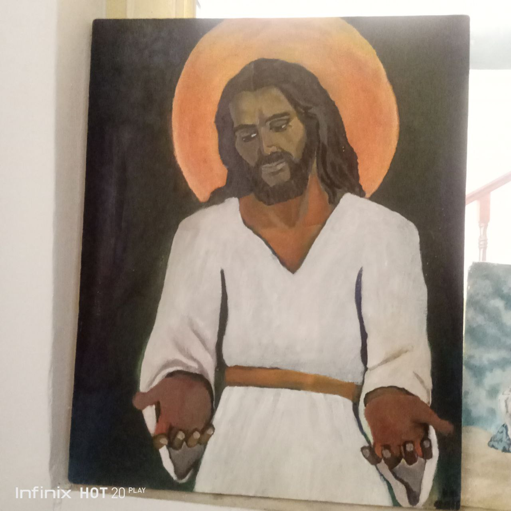
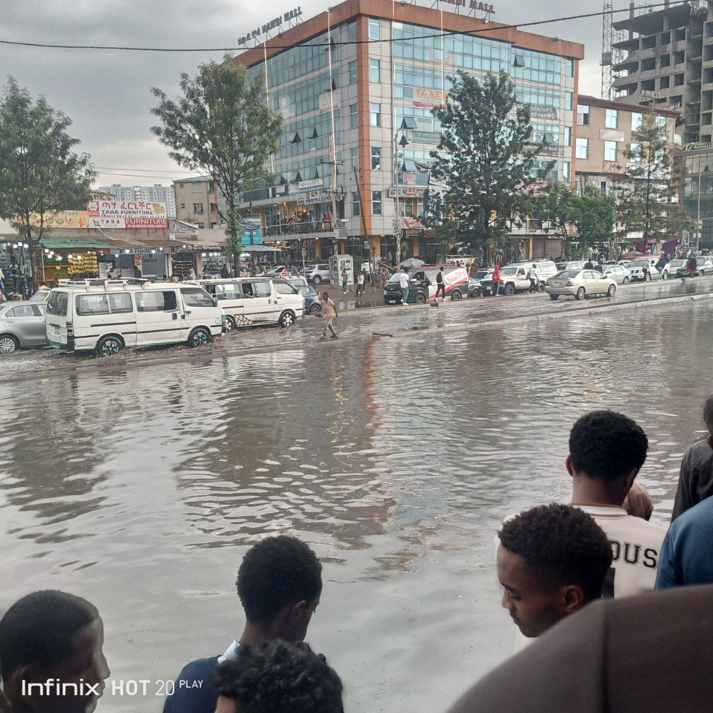
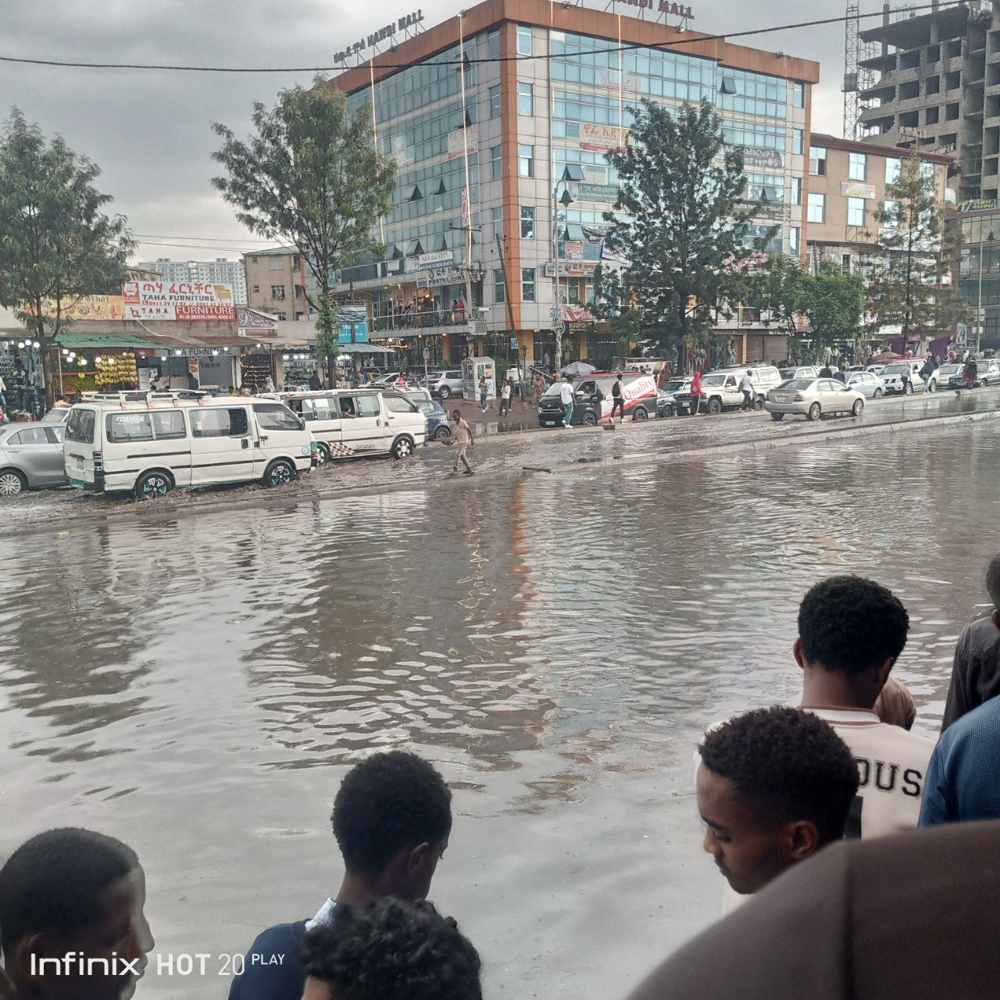

Java
Java is a versatile programming language known for its platform independence and object-oriented nature. I have some experience in developing Java applications, including console applications, desktop applications, and web applications. I'm comfortable in core Java concepts such as object-oriented programming, data structures, algorithms, and exception handling.
I'm currently tyring to learm Java frameworks like Spring Boot and Hibernate, to enable me build robust and scalable web applications. I'm comfortable with database interactions, and unit testing.
Python
Python is a powerful and easy-to-learn programming language that is widely used in data science, machine learning, and web development. I've gained expertise in Python's core concepts, including data structures, control flow, and functions. I would like to understand libraries like NumPy, Pandas, and Matplotlib more clearly because I need them for data analysis and visualization.
I've tyring to explore machine learning frameworks like TensorFlow and PyTorch, and I'm interested in applying these techniques to real-world problems. Additionally, I am working with web frameworks like Django and Flask to build dynamic web applications.
Photography
Photography is my passion, and I enjoy capturing the beauty of the world through my lens. I've experimented with various photography techniques, including portrait, landscape, and street photography. I'm skilled in using DSLR cameras and editing software like Adobe Lightroom and Photoshop to enhance my images.
I'm always eager to learn new techniques and explore different photography genres. I believe that photography is a powerful tool for storytelling and self-expression.
Art
Art is another creative outlet for me, allowing me to express my imagination and emotions.I love to call myself "KID" in my paintings, mostly because it makes me anonymous and challenges the viewer to judge the paintings, instead of me. I've experimented with various art forms, including painting, drawing, and digital art. I'm skilled in using traditional art materials like acrylics and watercolors, as well as digital tools like Adobe Illustrator and Photoshop.
I'm inspired by the beauty of nature and human creativity. I believe that art has the power to evoke emotions and inspire others.
Photo Dump


 
